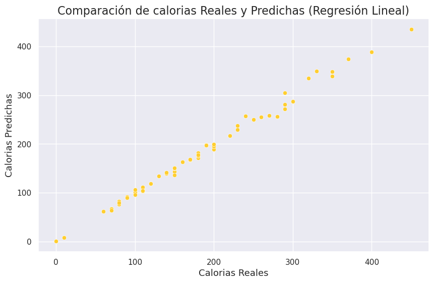
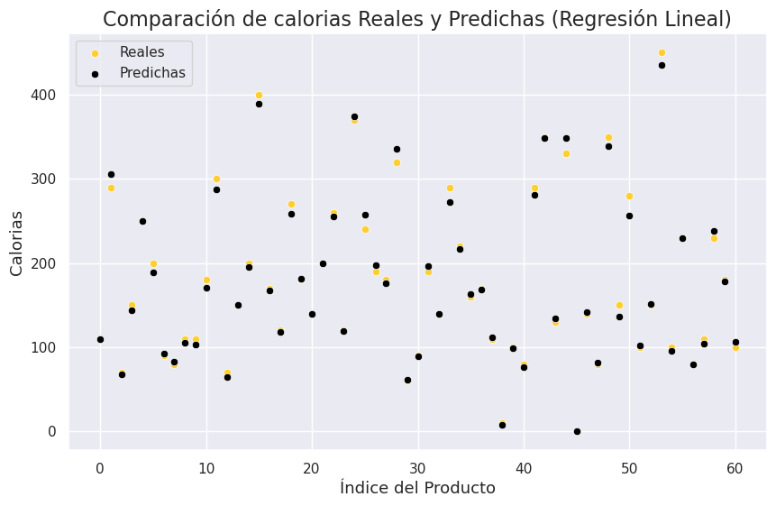
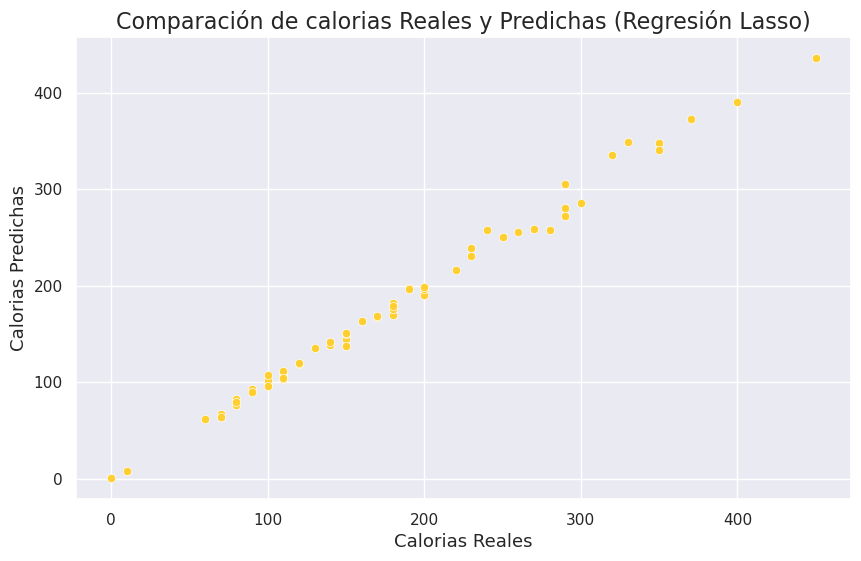

Análisis del Uso de Modelos Lasso y Ridge en la Predicción de Calorías en Productos de Starbucks
En este análisis, exploramos el uso de dos técnicas de regularización, Lasso y Ridge, para predecir la cantidad de calorías en productos de Starbucks. La base de datos utilizada contiene información nutricional, centrándonos en diversos nutrientes para realizar nuestras predicciones. Los resultados y hallazgos proporcionan una visión detallada de cómo estos modelos pueden ser útiles en la industria alimentaria para comprender y controlar las calorías en productos.
Base de Datos Utilizada
La base de datos se compone de 242 productos de Starbucks, con 9 atributos nutricionales como Total Fat, Saturated Fat, Sodium, etc. El objetivo es predecir la cantidad de calorías de estos productos.
Modelos utilizados
1. Regresión Lineal: Es un modelo estadístico que examina la relación lineal entre dos (Regresión Lineal Simple) o más variables (Regresión Lineal Múltiple): una variable dependiente y una variable independiente. En otras palabras, la regresión lineal predice la variable dependiente basándose en los valores de la(s) variable(s) independiente(s).
2. Lasso (Least Absolute Shrinkage and Selection Operator): Es una versión modificada de la regresión lineal, que utiliza una técnica llamada “regularización” para mejorar la precisión de las predicciones. Lasso agrega una penalización a los coeficientes de la regresión para evitar el sobreajuste y puede hacer que algunos coeficientes se reduzcan a cero, lo que ayuda en la selección de características.
3. Ridge: Al igual que Lasso, Ridge es una versión modificada de la regresión lineal que utiliza la regularización. Sin embargo, a diferencia de Lasso, Ridge no reduce los coeficientes a cero. Esto significa que todos los atributos se incluyen en el modelo, pero la regularización ayuda a reducir el impacto de las variables menos importantes.
Proceso de Tratamiento de Datos
1. Carga de Datos: La información se carga desde un archivo CSV utilizando la biblioteca pandas.
2. Selección de Atributos: Se seleccionan atributos clave relacionados con la cantidad de calorías.
3. División de Conjuntos: Los datos se dividen en conjuntos de entrenamiento y prueba (75% - 25%).
4. Modelado: Se implementan modelos de regresión lineal, Lasso y Ridge utilizando scikit-learn.
Resultados y Evaluación del Modelo
Se evaluaron los modelos utilizando la métrica de pérdida cuadrática media (MSE) en el conjunto de prueba:
• Regresión Lineal (MSE): 58.09 • Lasso (MSE): 58.29 • Ridge (MSE): 58.22
Los coeficientes obtenidos para Lasso y Ridge proporcionan información sobre la importancia de cada atributo en la predicción de calorías.
Interpretación de Coeficientes
• Coeficientes Lasso: Algunos coeficientes son reducidos a cero, lo que sugiere la eliminación de ciertos atributos en la predicción. • Coeficientes Ridge: Todos los atributos contribuyen al modelo, aunque algunos pueden ser penalizados en menor medida.
Conclusiones
• Ambos modelos Lasso y Ridge ofrecen resultados similares en términos de pérdida. • La regularización puede ser útil para seleccionar características clave y controlar la complejidad del modelo. • La interpretación de los coeficientes proporciona información sobre la influencia de cada nutriente en la predicción.
Consideraciones Adicionales
Este análisis destaca la importancia de comprender cómo los modelos pueden influir en la toma de decisiones en la industria alimentaria, especialmente en la gestión de calorías en productos de consumo masivo. Sin embargo, es esencial considerar otros factores y realizar evaluaciones adicionales para obtener una imagen completa de la aplicabilidad de estos modelos.
Repositorio
Si deseas validar cómo se construyó el algoritmo y la base de datos, puedes visitar el siguiente enlace. Allí encontrarás todos los detalles del código y los datos utilizados en este proyecto.
👉 Haz clic aquí 👈